Every project undertaken by TIMOSA Foundation reflects our commitment to protecting the environment, promoting climate resilience, empowering communities, conserving biodiversity, and creating sustainable opportunities for present and future generations.
TIMOSA Foundation develops practical, community-driven projects that address environmental conservation, climate change, biodiversity protection, disaster preparedness, environmental education and sustainable livelihoods. Through partnerships, research, advocacy and community engagement, we continue to create positive change across Ghana.
Conserving forests, wildlife, biodiversity and natural ecosystems through education, advocacy and practical field activities.
Promoting sustainable drainage, climate adaptation, disaster preparedness and resilient communities.
Supporting environmentally responsible development that improves livelihoods while protecting natural resources.
Working alongside local communities, women and youth through awareness campaigns, education and collaborative initiatives.
Explore some of TIMOSA Foundation's completed projects that demonstrate our commitment to environmental sustainability, conservation, community development and climate resilience.

TIMOSA Foundation organized an educational field visit to the Shai Hills Resource Reserve to promote biodiversity conservation, wildlife protection, sustainable natural resource management and environmental stewardship among participants.
Read More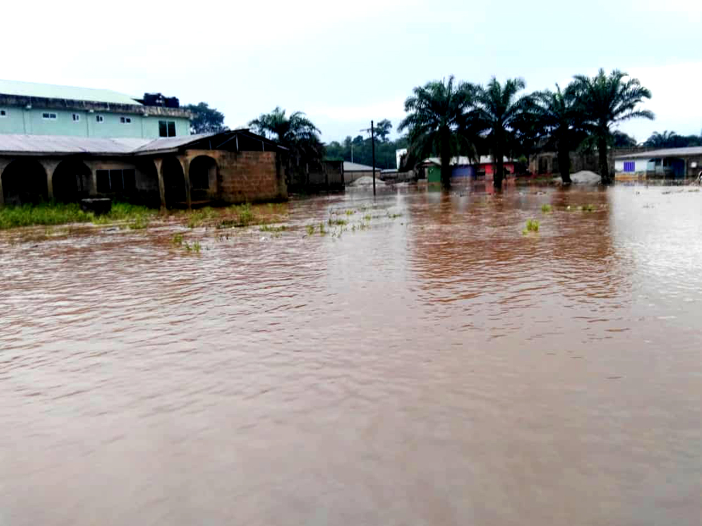
Following the devastating June floods, TIMOSA Foundation documented the experiences of affected families while advocating for sustainable drainage systems, responsible waste management and stronger community resilience.
Read More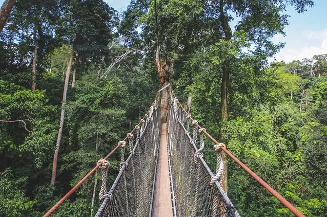
A practical environmental learning programme focused on forest conservation, climate resilience, ecotourism, biodiversity protection and sustainable ecosystem management.
Read MoreExplore highlights from TIMOSA Foundation's conservation, climate resilience and community development activities.
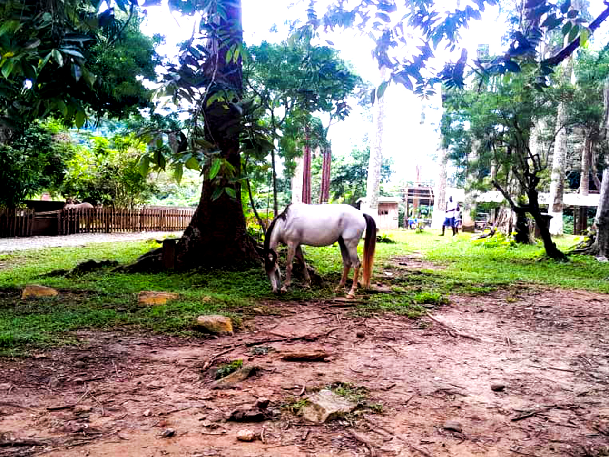
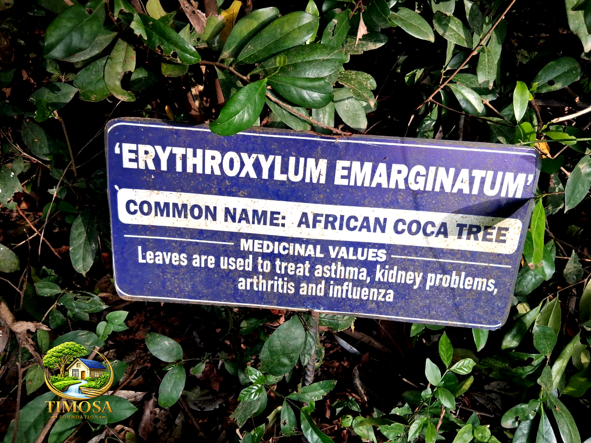
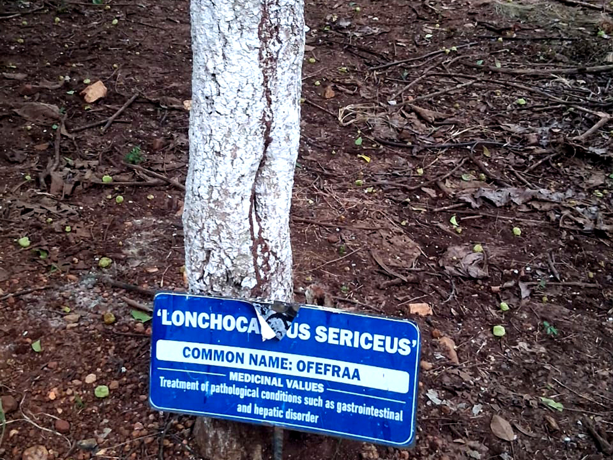
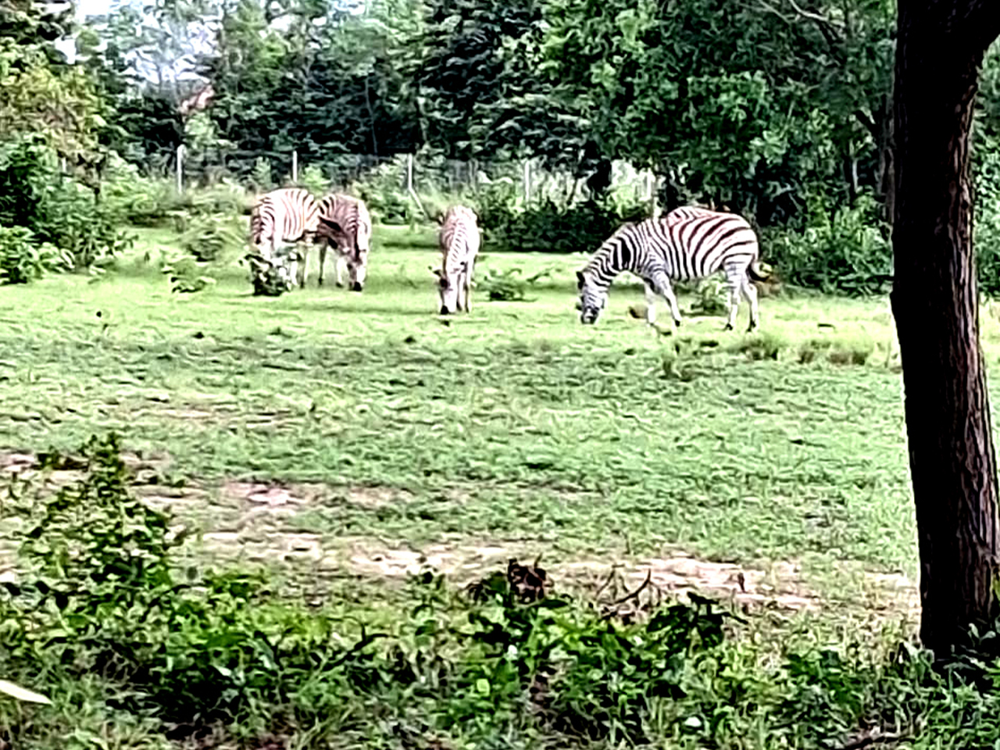

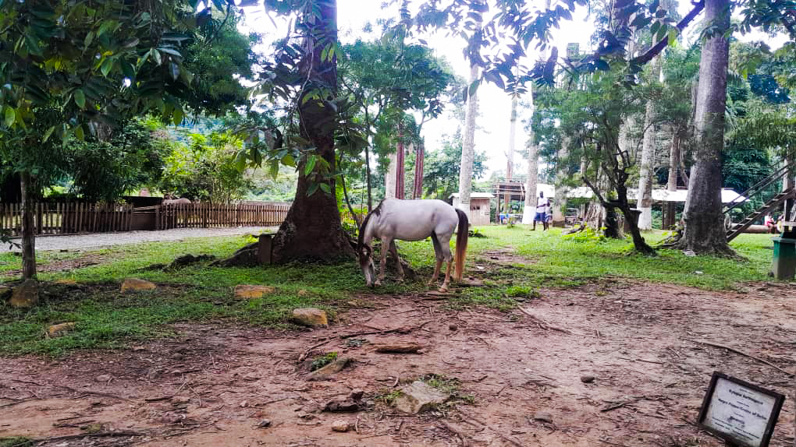
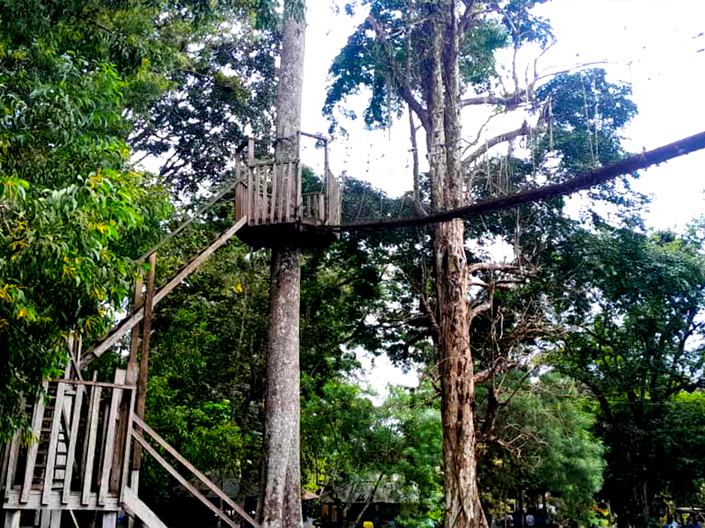
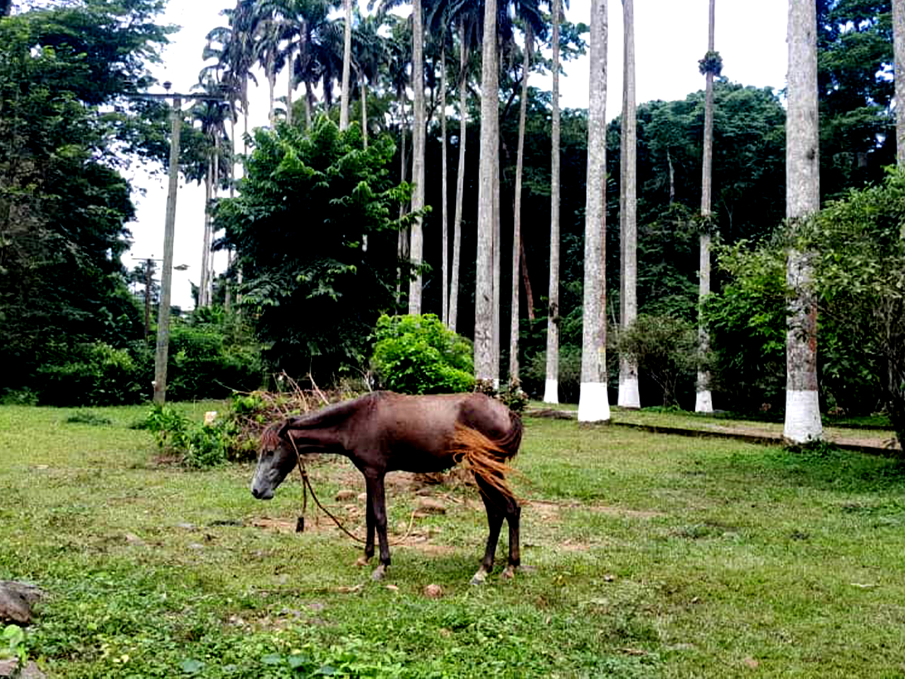
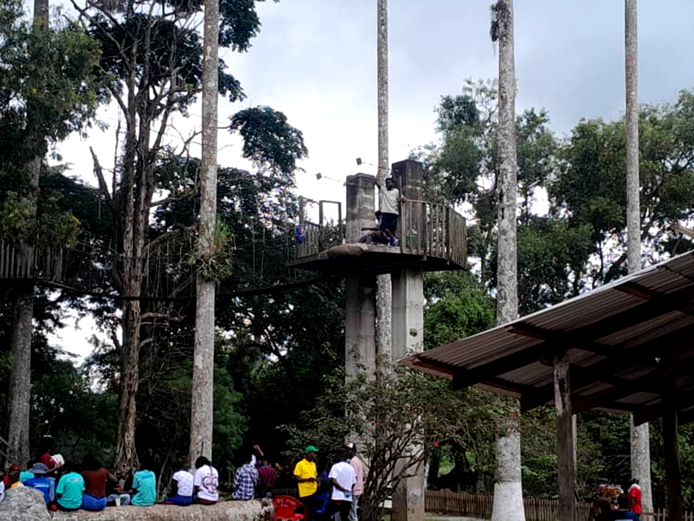

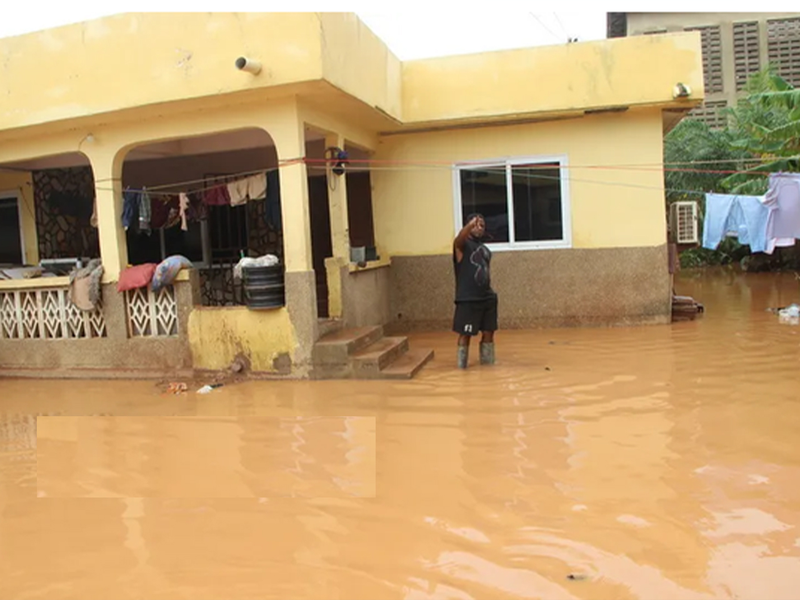
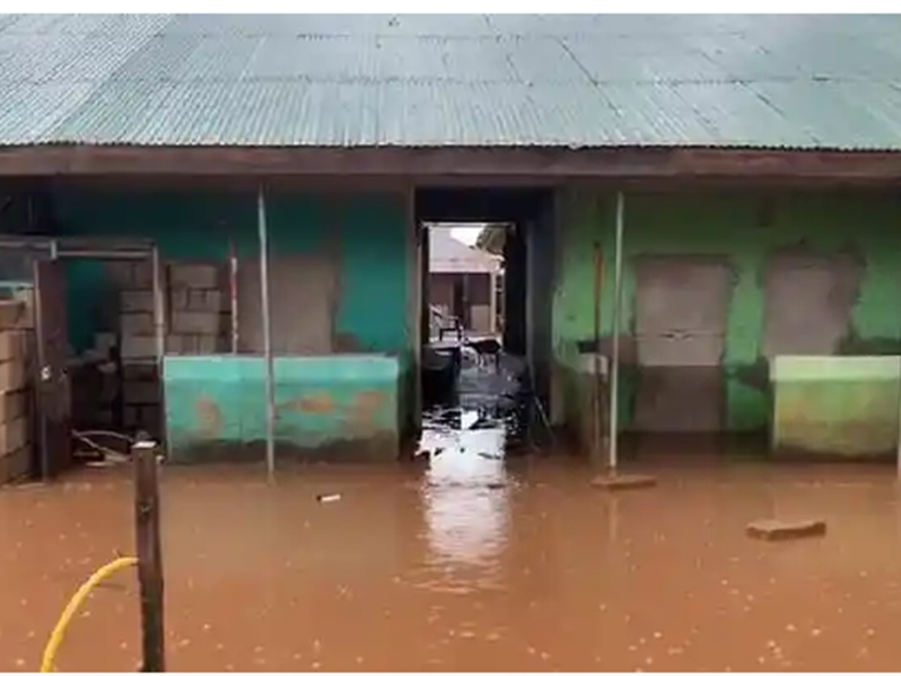
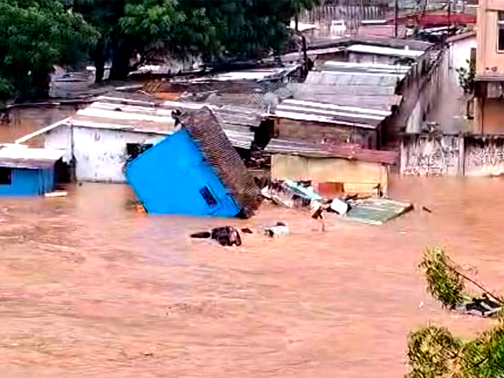
Every initiative contributes to a healthier environment, stronger communities and a more sustainable future for Ghana.
Trees Conserved & Promoted
People Reached
Communities Engaged
Commitment to Sustainability
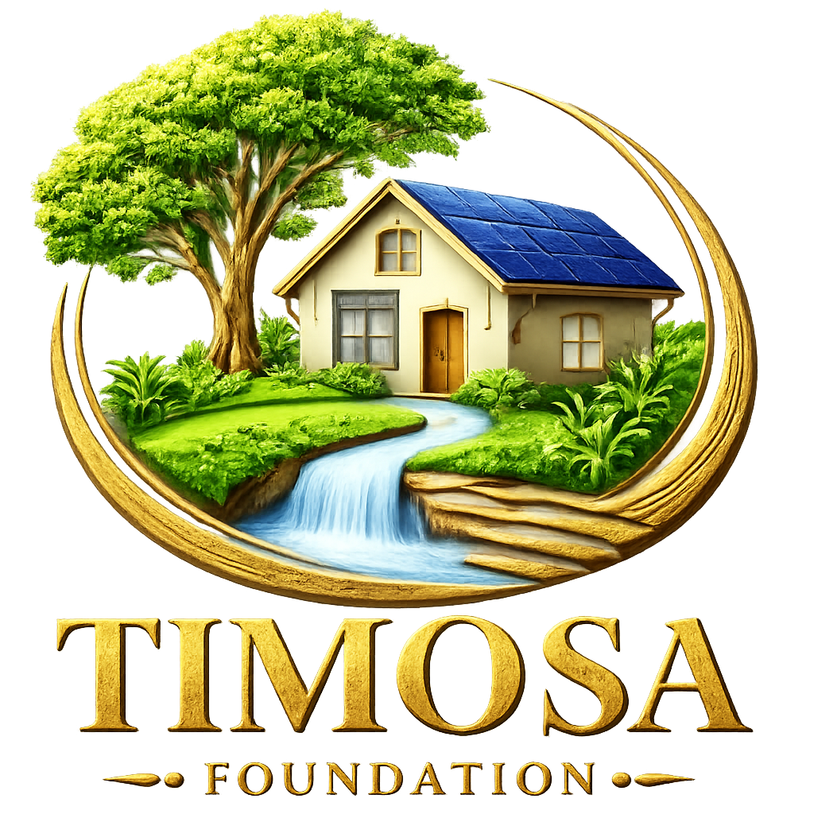
Every TIMOSA Foundation project is designed to create lasting environmental and social impact through practical, community-driven solutions that protect nature, strengthen resilience and improve livelihoods.
Whether you're an individual, organization, volunteer or corporate partner, your support enables TIMOSA Foundation to implement more impactful environmental and community development projects.